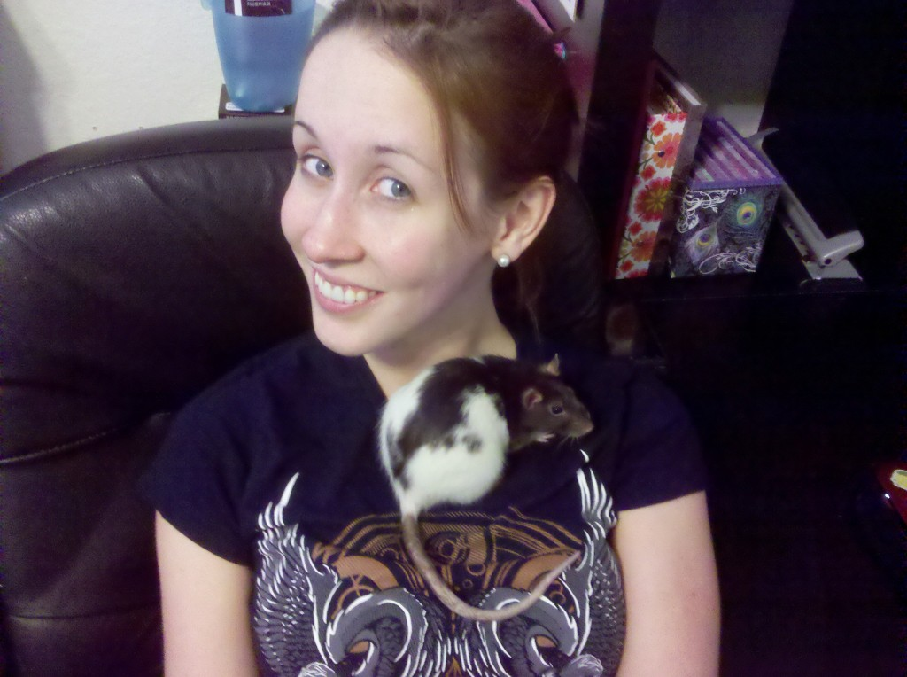

This is the story of the rat we brought home from Publix.
Danielle and I had gone out shopping to pick up some necessities for the week. It was raining, so neither of us had much desire to be out, but out we went.
By the time we finished, the rain had stopped, but the ground was still wet. We walked to the car, put all of the groceries in the back, and I put away the grocery cart. On my way back to the car, I noticed a furry white thing dash under the car.
I stared blankly at the pavement trying to make sense of what I had seen. It was too small to be a cat, and the way it moved reminded me of a rodent. According to Danielle, all I said during this time was “Aww…”
“What is it?” she asked.
“I think a rat just crawled under the car,” I said, deciding that the furry must not have been a cat. She looked, and sure enough it was a little black and white Fancy Rat.
“What do we do about it?” she asked, hesitantly.
“Catch it, of course.” Some part of me knew that what I was doing was crazy, but a larger part of me didn’t care. I love rats, and I had several as pets during college. Regardless of the outcome, if I didn’t try to save this animal from the cats and soccer moms that would surely kill it on sight, I knew I would regret it.
Danielle took a little convincing, but when I explained to her that Fancy Rats don’t exist in the wild, she decided to let me try my crackpot plan. We took a recycling bin out of the trunk, put some of the cereal we had just bought inside of it, and tried to coax the rat into it. She was much to clever for that (the nickname we gave her at first was “Prudence”). After about 15 minutes of her avoiding the bin by walking sideways like a crab, I put the bin down. Enough of that nonsense.
By this time, a few Publix employees had noticed our erratic movements around the parking lot (I can only imagine what we looked like to people that didn’t see the rat). When one of them walked up to see what was going on, the rat simply ran up to him and crawled around on his shoes for a few minutes.
When he went back into the store, I decided to test my luck. Against my better judgement (and Danielle’s warnings), I decided to simply kneel down and hold out my hand. The rat walked right up to me. I tried to pick her up, and she let me. Deciding not to tempt fate, I quickly placed her into the recycling bin. She didn’t seem to mind. Danielle later wondered if the rat just wanted to be held.
Danielle and I took her home, the insanity of what we were doing sinking in along the way. Now what? I pulled out the travel cage we had for our other pet rats (a bird cage that I found in the garbage a few years back) and filled it with bedding, a box, food, and water. We placed the new rat in. She didn’t bite me this time either. (I must be a rat whisperer.)
I gave her a quick examination, and to my amazement, she seemed perfectly healthy, except for the sneezing, which I guessed was partially caused by being out in the rain. I took her to the vet the next day, and he confirmed my thoughts… she just had a mild case of myco. And he was “fairly sure” that she was a female. When I mentioned that most male rats I’ve encountered were quite obviously male, he merely commented, “Yeah, usually…” Deciding I didn’t want to know the story behind that comment, I laughed it off.
He gave me some medicine to give her, and we were on our way.
Since we already had rats, and this one had become our “new girl”, Danielle suggested the name Zoey, a tribute to Zooey Deschanel. I thought it was clever, and our other room-mate was fine with it, so it was decided.
Zoey – the rat who lived. What are the odds?
